23/09/2024 — Tắc động mạch cấp — là động mạch nào?
Bản dịch tiếng Việt của bài "Acute artery occlusion — which one?" – Dr. Smith’s ECG Blog. Giữ nguyên toàn bộ 14 hình ảnh và 2 video của bản gốc.
Viết bởi Willy Frick, Ken Grauer biên tập
Một phụ nữ ngoài 70 tuổi có tiền sử tăng huyết áp đến viện vì khó thở khởi phát cấp tính. Bà đang dắt chó đi dạo thì đột ngột chóng mặt và choáng váng. Khi đội cấp cứu ngoài viện (EMS) tìm thấy bà, bà khó thở và vã mồ hôi. Điện tâm đồ của bà như dưới đây:

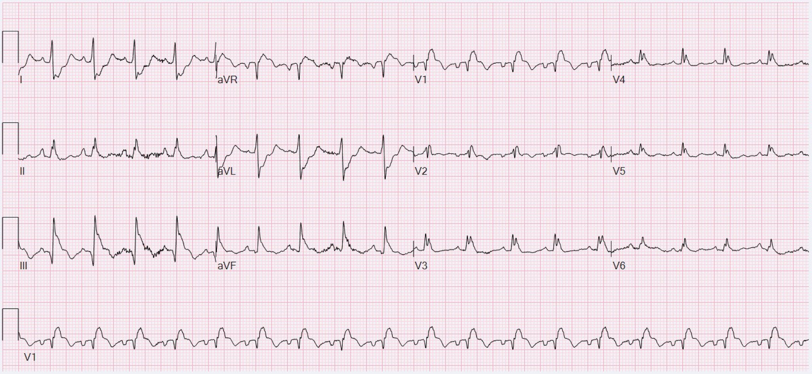
Bạn nghĩ sao?
Thuật toán máy thông thường đọc điện tâm đồ này là STEMI. Bản ghi cho thấy nhịp nhanh xoang kèm blốc nhánh phải. Ngoài ra, có ST chênh lên (STE) đồng hướng ở V1. RBBB mới xuất hiện và STE đồng hướng ở V1 có thể gặp trong OMI do LAD. Thêm vào đó, với STE ở V1 và ST chênh xuống (STD) ở các chuyển đạo trước tim bên, đây có thể là hình ảnh xoáy trước tim (Precordial Swirl).
Mặt khác, với STE ở V1 và III, cùng STD ở I và aVL, điện tâm đồ này có thể biểu hiện OMI do RCA đoạn gần kèm tổn thương thất phải.
Dưới đây là kết quả đọc của Queen of Hearts kèm khả năng giải thích của AI (explainability)!

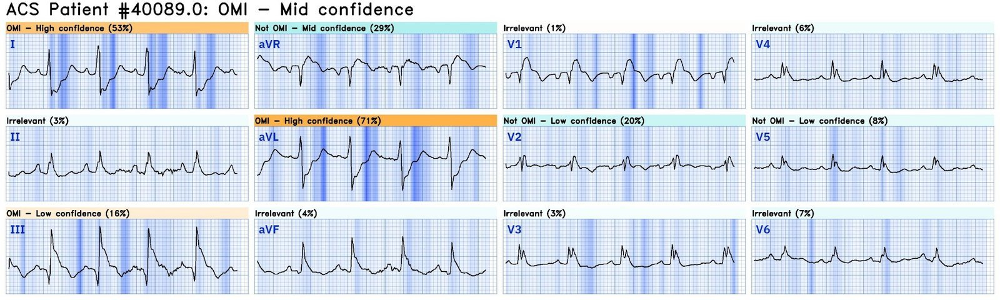
Thật thú vị khi thấy Queen of Hearts dường như không bận tâm đến V1, nhưng lại nhận ra STE đồng hướng ở III cùng với ST chênh xuống đồng hướng soi gương ở I và aVL.
Lùi lại một bước, hãy nhớ rằng nhịp nhanh xoang ít gặp trong OMI (trừ những ca sắp rơi vào sốc tim). Ngoài ra, có trục lệch phải ở mức ranh giới. Cũng có sóng T đảo ngược (TWI) ở các chuyển đạo trước tim phải và ở chuyển đạo III. Ở bệnh nhân có QRS hẹp (không phải bệnh nhân này), hình ảnh này rất gợi ý thuyên tắc phổi cấp.
Dưới đây là các chuyển đạo I và aVF cho thấy trục lệch phải ranh giới:

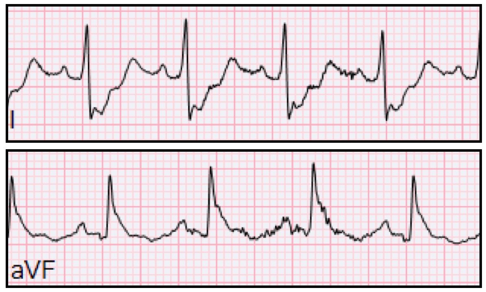
Lưu ý rằng sóng S tận là bình thường trong RBBB. Trong ca này, sẽ hữu ích nếu coi phức bộ QRS như được chia thành nửa đầu và nửa sau. Điều này được thể hiện dưới đây bằng một đường đứt nét thẳng đứng màu xanh lam.
Lưu ý rằng sóng S tận rộng là một dấu hiệu được dự kiến ở các chuyển đạo bên trái khi có RBBB (tức là, do RBBB — thành phần cuối cùng của quá trình khử cực thất diễn ra chậm và hướng ra xa thất trái). Vì vậy — có thể hữu ích khi coi phức bộ QRS ở chuyển đạo I như được chia thành nửa đầu và nửa sau. Điều này được thể hiện theo sơ đồ dưới đây bằng một đường đứt nét thẳng đứng màu xanh lam.

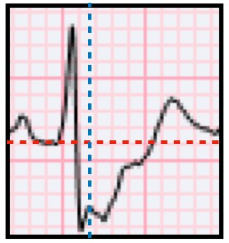
Phần đầu của QRS (bên trái đường xanh) biểu thị phần khử cực diễn ra trước khi xung động gặp nhánh phải bị blốc (tức là gồm khử cực vách từ trái sang phải rồi khử cực từ phải sang trái của thất trái không bị blốc).
Nửa sau của QRS (bên phải đường xanh nhưng trước điểm J) biểu thị sự khử cực của vùng cơ tim do nhánh phải chi phối. Vì nhánh phải bị blốc, đây là vùng khử cực sau cùng, và do đó biểu thị phần cuối QRS. Lưu ý rằng ngay cả khi bỏ qua phần cuối QRS, vẫn có trục lệch phải ranh giới.
Chúng ta cũng thấy các chuyển đạo V1 và III có TWI (mặc dù điều này có thể bình thường trong RBBB)

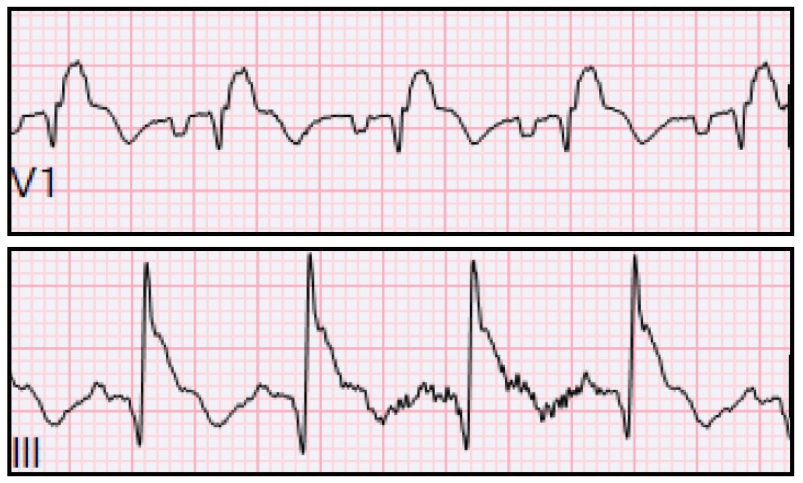
Ở bệnh nhân có QRS rộng, điều quan trọng là xác định thời gian QRS thực sự ở chuyển đạo thấy rõ nhất. Một số chuyển đạo có thể có phần đầu hoặc phần cuối QRS tương đối đẳng điện, và điều này có thể dẫn đến hiểu sai vị trí điểm J. Ví dụ, thoạt nhìn chuyển đạo III có vẻ có STE rất lớn kèm ST chênh xuống soi gương ở aVL. Tuy nhiên, nếu ta đo thời gian QRS ở V1, nơi dễ nhận thấy:

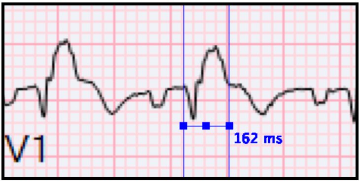
Rồi áp số đo này sang các chuyển đạo khác:

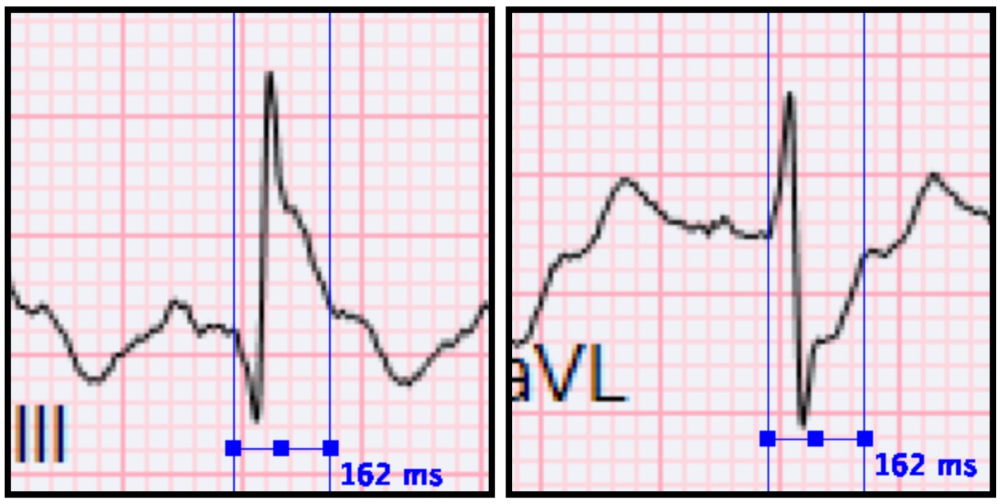
Giờ thì rõ ràng là STE/STD chỉ ở mức vừa phải.
Trên lâm sàng, bạn làm gì khi điện tâm đồ trông như thế này? Làm thế nào để phân loại cấp cứu, đưa bệnh nhân đến phòng thông tim (cath lab) hay có thể là phòng X quang can thiệp (IR) để lấy huyết khối?
Trả lời: Siêu âm tại giường!
Các bác sĩ điều trị cho bệnh nhân đã ghi được mặt cắt trục ngắn cạnh ức sau đây.
Mặc dù khó về mặt kỹ thuật và do đó chất lượng còn nhiều hạn chế, bạn vẫn có thể nhận ra thất phải giãn và vách liên thất dẹt, điều gợi ý thuyên tắc phổi hơn nhiều so với OMI. Kết hợp với bệnh sử khó thở và gần ngất, dấu hiệu này cực kỳ hữu ích cho việc phân loại cấp cứu. Sau đó bệnh nhân được xác nhận có PE lớn hai bên trên CT như dưới đây.
______
Smith: Nhồi máu thất phải cũng có thể có hình ảnh này trên siêu âm. Vì vậy cần chụp CT để tìm ra chẩn đoán! Dĩ nhiên cũng nên biết tình trạng oxy hóa của bệnh nhân: trong nhồi máu cơ tim cấp không có giảm oxy máu trừ khi nó dẫn đến phù phổi. Trong PE, hầu như luôn có giảm oxy máu ở một mức độ nào đó mà không có phù phổi. Vì vậy, giảm oxy máu mà không có đường B trên siêu âm phổi nghiêng mạnh về PE.
Xem bài này về nhồi máu thất phải (RV MI) có cả dấu hiệu McConnell lẫn dấu hiệu “D”:
Inferior and Posterior STEMI. What else? (STEMI thành dưới và thành sau. Còn gì nữa?)
_______
Dưới đây là một số ảnh tĩnh tiêu biểu với mũi tên đỏ chỉ vào các cục thuyên tắc.

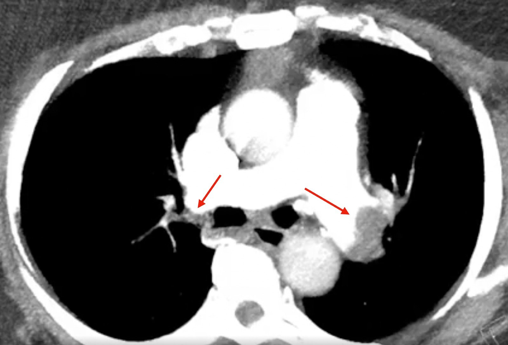

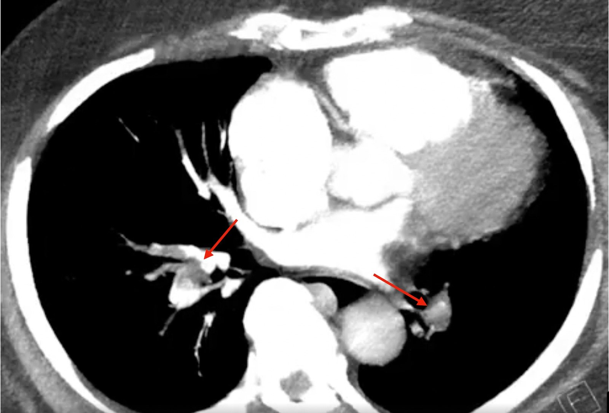
Một phần nhờ chẩn đoán nhanh tại giường, bệnh nhân đã tránh được chụp mạch vành cấp cứu. Thay vào đó, bộ phận X quang can thiệp (IR) đã lấy huyết khối động mạch phổi và bệnh nhân hồi phục tốt. Điện tâm đồ ghi lại được thực hiện vào ngày hôm sau:

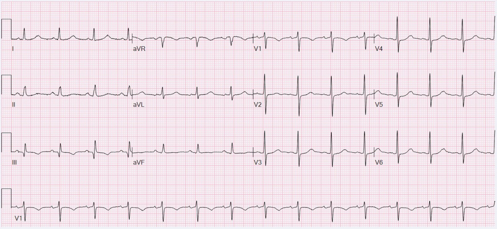
Lưu ý RBBB đã hết và trục dịch sang trái so với điện tâm đồ lúc nhập viện. Dưới đây là chuyển đạo I từ điện tâm đồ 1 và 2 đặt cạnh nhau để làm nổi bật sự thay đổi trục từ lệch phải ranh giới sang hoàn toàn bình thường.

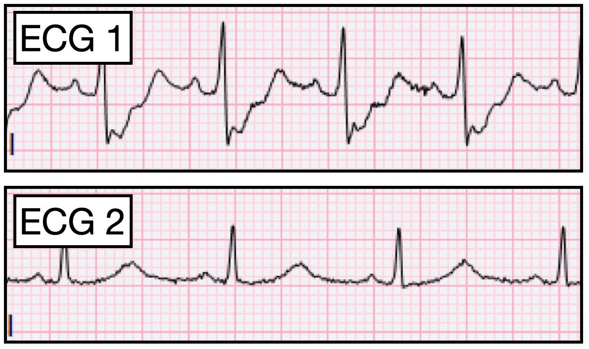
Những điểm cần học:
- PE cấp và OMI có thể trông giống nhau trên điện tâm đồ
- Siêu âm tại giường thường đóng vai trò then chốt để phân biệt hai bệnh này
- TWI ở các chuyển đạo trước tim phải và chuyển đạo III rất gợi ý PE ở bệnh nhân có QRS hẹp

===================================
BÌNH LUẬN CỦA TÔI, bởi KEN GRAUER, MD (23/9/2024):
===================================
Ca hôm nay là một ví dụ sâu sắc cho thấy vì sao PE (thuyên tắc phổi – Pulmonary Embolism) cấp vẫn tiếp tục bị bỏ sót. Hãy xem xét những điều sau:
- Chúng ta đã quen tìm kiếm tắc mạch vành cấp ở những bệnh nhân đến khoa cấp cứu (ED – Emergency Department) với triệu chứng cấp tính. Nhưng Bệnh sử trong ca hôm nay là khó thở cấp kèm chóng mặt và choáng váng — và về cơ bản là không có đau ngực! Theo BS. Frick — đây là bệnh sử điển hình của PE cấp diện rộng.
- Cả kết quả đọc bằng máy tính thông thường lẫn kết quả đọc của QoH (Queen Of Hearts) đều nói là nhồi máu cơ tim cấp. Cả hai đều sai.
- Theo BS. Frick — nhịp nhanh xoang thường không gặp trong OMI cấp trừ khi bệnh nhân bị sốc tim.
- Điện tâm đồ cho thấy ST chênh lên đáng lo ngại ở nhiều chuyển đạo — cùng với ST chênh xuống soi gương có vẻ cũng đáng lo ngại không kém. NHƯNG — sự phân bố các thay đổi ST-T trên điện tâm đồ ban đầu (mà tôi đã sao lại và đánh dấu trong Hình 1) — không thực sự gợi ý một vùng giải phẫu duy nhất (trong các chuyển đạo dưới chỉ có chuyển đạo III có ST chênh lên — và nhồi máu thất phải cấp đơn độc là hiếm gặp khi không có OMI thành dưới). Dù không loại trừ hoàn toàn bệnh mạch vành cấp — cần xem xét một nguyên nhân khác.
- Ngoài nhịp nhanh xoang (đã nêu ở trên) — còn có các dấu hiệu điện tâm đồ cấp tính khác có thể phù hợp với PE cấp (Xem bên dưới).
- Giá trị lâm sàng của siêu âm tim cấp cứu tại giường trong nhận biết PE diện rộng không phải lúc nào cũng được nghĩ tới ngay …

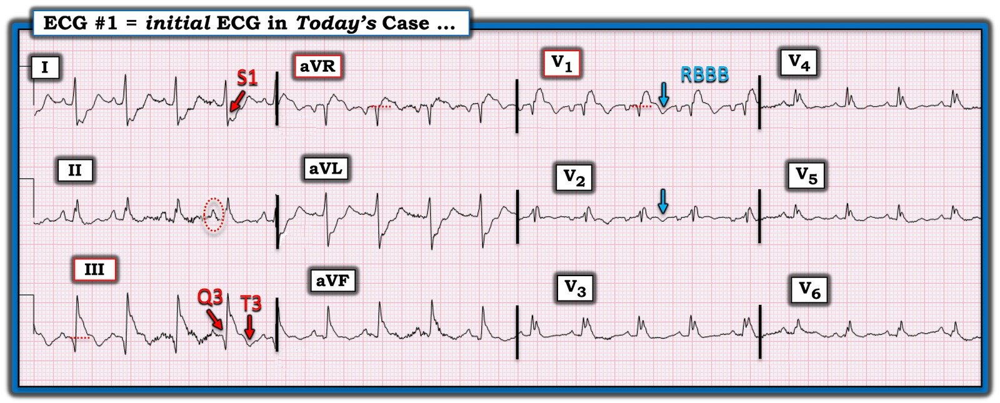
Các dấu hiệu điện tâm đồ của PE cấp trong ca hôm nay:
Chúng tôi định kỳ giới thiệu các ca PE cấp (Xem bài ngày 17 tháng Sáu năm 2024 trên Dr. Smith’s ECG Blog — bài này có link tới hơn 25 ca như vậy). Tôi đã trích Bảng được trình bày dưới đây trong Hình 2 từ phần Bình luận của tôi trong bài ngày 17 tháng Sáu năm 2024 đó.
Các dấu hiệu điện tâm đồ trong Hình 1 gợi ý một PE cấp lớn gồm:
- Nhịp nhanh xoang (ở đây ~110/phút).
- Mặc dù tiêu chuẩn của RAA (bất thường nhĩ phải – Right Atrial Abnormality) không được thỏa mãn chặt chẽ (biên độ sóng P ở chuyển đạo II không đạt 2,5 mm) — sóng P ở chuyển đạo II nhọn và cao hơn bình thường (trong hình bầu dục chấm chấm màu ĐỎ ở Hình 1). Trong bối cảnh bệnh sử lâm sàng gợi ý và các dấu hiệu điện tâm đồ khác — tôi diễn giải tình trạng sóng P ở chuyển đạo dưới nhọn hơn mức dự kiến là gợi ý RAA, do đó là thêm một dấu hiệu hỗ trợ (dù tinh tế) cho “tăng gánh” thất phải.
- S1Q3T3 — Trong khi giá trị chẩn đoán của hình ảnh này còn hạn chế khi chỉ là một dấu hiệu đơn độc — một hình ảnh S1Q3T3 rõ ràng (như thấy ở Hình 1) — lại rất hữu ích trong ca hôm nay, khi đi kèm với các bằng chứng điện tâm đồ khác hướng tới một PE cấp lớn.
- “Tăng gánh” thất phải cấp — được gợi ý bởi sóng T đảo ngược ở chuyển đạo dưới (ở các chuyển đạo III,aVF) — và sóng T đảo ngược ở chuyển đạo trước (ở các chuyển đạo V1,V2 — theo các mũi tên XANH LAM).
- Thường ít người biết rằng ST chênh lên ở chuyển đạo trước đôi khi có thể gặp trong PE cấp (Zhan và cs. — Ann Noninvasive Electrocardiol 19(6):543-551, 2014 — và — Omar HR — Eur Heart J: Acute Cardiovascu Care (5(8): 579-586, 2016).
- Ngoài chuyển đạo V1 — các chuyển đạo bên phải khác như chuyển đạo III và aVR — có thể hướng về vùng trước của thất phải. Nếu thất phải giãn lớn — thì các chuyển đạo V2 và V3 cũng có thể hướng về vùng trước của thất phải — và — nếu có thiếu máu cục bộ xuyên thành nặng của thất phải, bất kỳ chuyển đạo nào trong số này cũng có thể có ST chênh lên (như thấy ở các chuyển đạo III, aVR và V1 trong Hình 1).
- Có RBBB (QRS giãn rộng, chủ yếu dương ở chuyển đạo V1 — kèm sóng S tận rộng ở chuyển đạo bên I ).
- Không chỉ là RBBB — dạng qR ở chuyển đạo V1 còn là một chỉ điểm điện tâm đồ của tăng áp phổi trong ca hôm nay (Xem phần Bình luận của tôi trong bài ngày 28 tháng Ba năm 2022 trên Dr. Smith’s ECG Blog).
ĐIỀU CỐT LÕI trong CA hôm nay: Nếu được nghĩ tới — các chỉ điểm điện tâm đồ nêu trên gợi ý mạnh PE cấp diện rộng. Theo BS. Frick — chẩn đoán này có thể được xác nhận trong vòng vài phút bằng siêu âm tim tại giường!

= = = = = = = =
“Lưu ý” bên dưới dấu hiệu S1Q3T3 trong Hình 2 — đề cập đến dữ liệu từ Kosuge và cs. (Am J Cardiol 99(6): 817-821, 2007 — và bài ngày 4 tháng Ba năm 2023 trên Dr. Smith’s ECG Blog) — cho biết khi có sóng T đảo ngược ở các chuyển đạo ngực, nếu sóng T cũng đảo ngược ở chuyển đạo III và V1 — thì PE cấp có khả năng cao hơn nhiều so với bệnh mạch vành cấp.